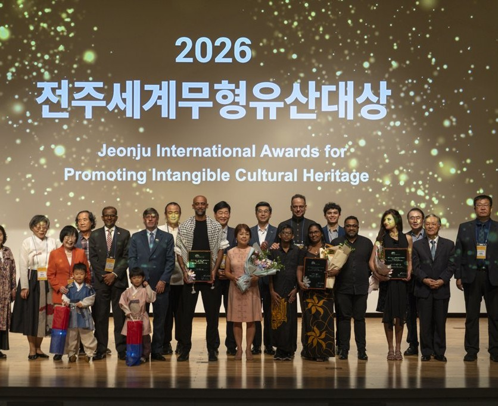

Technology & academic cooperation
Supported interpretation and facilitation at UNI’s Smart City Institute, including exchanges with a Korean delegation that included JBNU’s President.
National University of Engineering, Peru

Cultural cooperation in Jeonju
Supported outreach through CICS/JIAPICH, helping enable Peru’s participation in the 2026 awards, where Peru received an Honorable Mention.
Center for Intangible Culture Studies · JIAPICH
The Embassy of Peru supports consideration of my transfer and the possibility of a Presidential Scholarship. Subject to JBNU’s applicable regulations and selection criteria. Letter signed by Ambassador Paul Duclos · 20 October 2026.